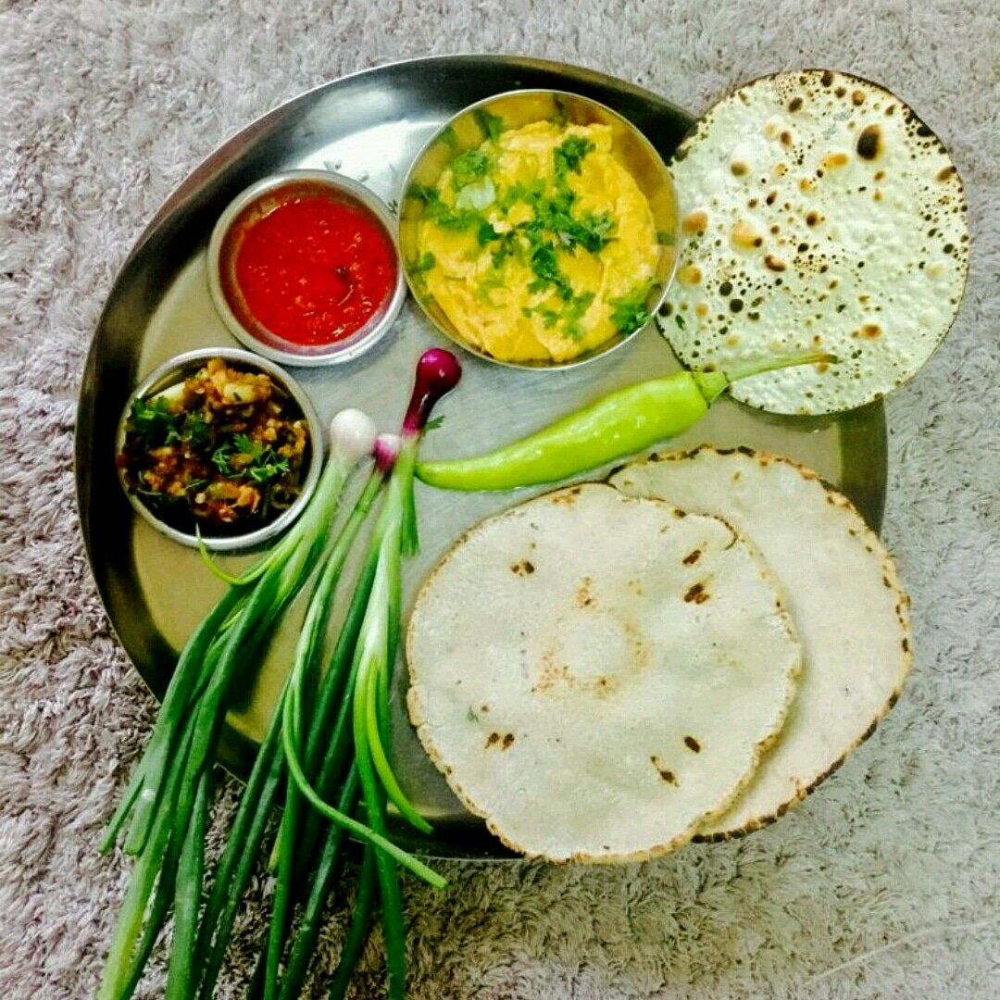

<
Famous Food In Nanded
1.Puran-Poli
Puran poli is a quintessential Maharashtrian sweet flatbread traditionally prepared during festivals like Ganesh Chaturthi and Gudi Padwa, symbolizing celebration and togetherness. It consists of a soft, thin outer layer made from a dough of wheat flour (often mixed with some all-purpose flour), turmeric, salt, and oil or ghee, rolled out to encase a rich, aromatic filling called "puran." The puran is made by pressure-cooking chana dal (split Bengal gram) until soft, then mashing it and cooking it with jaggery until thick and sticky, flavored with warm spices such as cardamom, nutmeg, fennel, and dry ginger powder. This sweet lentil mixture is then enclosed in the dough, carefully rolled out, and cooked on a griddle with generous ghee until golden brown on both sides. Puran poli is traditionally served hot, often with a dollop of ghee on top, and sometimes accompanied by milk or a savory lentil curry called katachi amti.
2.pitla-Bhakri

Pithla Bhakri is a classic and comforting Maharashtrian meal combining Pithla, a spicy and creamy gram flour (besan) curry, with Bhakri, a rustic flatbread usually made from jowar (sorghum) or bajra (pearl millet) flour. Pithla is prepared by roasting besan with a tempering of mustard seeds, cumin seeds, asafoetida, chopped onions, garlic, green chilies, and curry leaves, then cooking it with water and turmeric to form a thick, flavorful curry. It is seasoned with salt and garnished with fresh coriander, offering a rich, earthy taste and smooth texture. Bhakri is a simple, gluten-free flatbread made by kneading millet flour with water, rolled into rounds, and cooked on a hot griddle until it develops a slightly crisp exterior while remaining soft inside. Together, Pithla and Bhakri create a wholesome, nutritious, and satisfying meal, cherished especially in rural Maharashtra for its simplicity, protein content, and hearty flavors. This dish is often enjoyed with a side of green chutney or fresh yogurt, making it a staple comfort food that reflects the region’s agricultural roots and culinary traditions
3.Sheera
Sheera, also known as rava sheera or suji halwa, is a popular and traditional Maharashtrian sweet dish made primarily from semolina (rava or sooji), ghee, sugar, and flavored with cardamom and sometimes saffron. The preparation involves roasting semolina in ghee until it turns aromatic and golden, then cooking it with hot water or milk to achieve a soft, pudding-like consistency. Sugar is added for sweetness, and the dish is often garnished with fried nuts like cashews and raisins, enhancing its texture and richness. Sheera is commonly prepared during festivals, religious ceremonies, and special occasions as a prasad (offering) or dessert, symbolizing auspiciousness and celebration. Its ease of preparation, comforting taste, and rich aroma make it a favorite for breakfast or as a quick sweet treat. Maharashtrian cuisine, known for its balance of sweet, sour, spicy, and savory flavors, often features sheera as part of a traditional thali or festive meal, reflecting the region’s culinary heritage rooted in simplicity and wholesome ingredients
4.Bharli-Vangi

Bharli Vangi is a classic and much-loved Maharashtrian dish featuring baby eggplants (vangi) stuffed with a rich, flavorful mixture of grated coconut, roasted peanuts, jaggery, spices like goda masala, red chili powder, turmeric, and coriander, along with fresh herbs such as chopped coriander leaves. The eggplants are carefully slit without cutting through completely, allowing the stuffing to be packed inside each one. The stuffed brinjals are then cooked in a tangy and mildly spicy curry made from sautéed onions, tomatoes, mustard seeds, cumin seeds, asafoetida, and turmeric, simmered gently with water until the eggplants become tender and the flavors meld beautifully. The dish balances sweet, sour, and spicy notes, thanks to the jaggery and tamarind or tomatoes, and is typically garnished with fresh coriander before serving. Bharli Vangi is traditionally enjoyed with Indian flatbreads like chapati, bhakri, or with steamed rice, making it a hearty and satisfying meal.
<